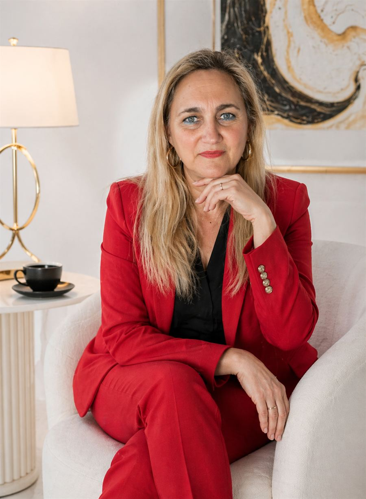

Psicóloga General Sanitaria · Colegiada nº 27366 COPC
Cuando algo no va bien,
mereces una ayuda real
Psicología clínica presencial en Rubí y online para toda España. Especialistas en infanto-juvenil: TEA, TDAH y necesidades especiales. Atención para todas las edades basada en evidencia.
experiencia
atendidos
y etapas

¿En qué podemos ayudarte?
Áreas de atención
Trabajo con todas las edades y etapas vitales. Si no ves tu situación aquí, consúltame igualmente.
Ansiedad y miedos
Crisis de ansiedad, fobias, pánico, preocupación excesiva y tensión constante.
Estrés y burnout
Agotamiento emocional, desbordamiento laboral, dificultad para desconectar.
Depresión y tristeza
Estado de ánimo bajo, falta de motivación, aislamiento, pérdida de disfrute.
Autoestima y autoconcepto
Inseguridad, autocrítica excesiva, dificultad para poner límites, baja confianza.
Relaciones y vínculos
Conflictos relacionales, dependencia emocional, duelos, dificultades de comunicación.
Infancia y adolescencia Especialidad
TEA, TDAH, dificultades escolares, conducta, acoso, identidad y gestión emocional. Amplia experiencia con NEAE y becas de apoyo terapéutico.
Personas mayores
Adaptación a cambios vitales, duelos, soledad, bienestar emocional y autonomía.
Terapia familiar
Dinámicas familiares, conflictos intergeneracionales, comunicación y cohesión familiar.
¿No encuentras lo que buscas? Consúltanos sin compromiso
Rubí · Infanto-juvenil
TEA, TDAH y necesidades especiales
Amplia experiencia en evaluación e intervención con niños y adolescentes con necesidades específicas de apoyo educativo (NEAE) en Rubí.
Trastorno del Espectro Autista (TEA)
Evaluación, diagnóstico diferencial e intervención temprana. Trabajo con el entorno familiar y coordinación con el equipo escolar para una atención integral.
TDAH y dificultades de atención
Evaluación neuropsicológica, entrenamiento en autorregulación, estrategias para el aula y el hogar. Intervención con el niño, la familia y el centro educativo.
Otras NEAE
Altas capacidades, dislexia, discapacidad intelectual leve, trastornos del aprendizaje, dificultades de integración sensorial y retrasos del desarrollo.
Intervención psicológica con becas NEAE
Las becas NEAE las gestiona el colegio de tu hijo o hija. En ESPAI SALUT somos el centro de intervención: realizamos el trabajo psicológico especializado con los menores que acceden a estas ayudas a través de sus centros educativos.
M. Carmen Cabello es psicóloga general sanitaria con especialidad en neuropsicología, con amplia experiencia en la evaluación e intervención con menores con TEA, TDAH y otras necesidades específicas de apoyo educativo. Si el colegio de tu hijo o hija tiene dudas sobre el proceso o quiere más información, puede contactarnos directamente.
Más información sobre NEAEQuién soy
M. Carmen Cabello León
Soy psicóloga general sanitaria con más de 15 años de experiencia clínica. Trabajo con niños, adolescentes, adultos y personas mayores, en modalidad individual, familiar y grupal.
Mi enfoque es integrador y basado en la evidencia científica: combino técnicas cognitivo-conductuales y sistémicas adaptadas a cada persona y momento vital. Creo en la importancia de un vínculo terapéutico sólido, la escucha activa y el respeto por el ritmo de cada paciente.
Cuento con amplia experiencia en psicología infanto-juvenil: evaluación e intervención en TEA, TDAH y otras necesidades específicas de apoyo educativo (NEAE), con coordinación directa con familias y centros escolares de Rubí y el Vallès Occidental.
Dirijo ESPAI SALUT, un centre de recursos i acompanyament psicològic con consulta presencial en Rubí y atención online en toda España a través del Instituto Politécnico de Psicología.
Sin complicaciones
¿Cómo es el proceso?
Tres pasos claros para empezar a sentirte mejor.
Primera consulta
Contactas por WhatsApp o email. En la primera sesión hablamos de tu situación, tus objetivos y resuelvo tus dudas. Sin compromiso.
Plan personalizado
Diseñamos juntos un plan terapéutico adaptado a ti: frecuencia de sesiones, técnicas y objetivos concretos y medibles.
Seguimiento y alta
Trabajamos sesión a sesión con revisiones regulares del progreso. El proceso termina cuando alcanzamos los objetivos.
Flexibilidad para ti
Modalidades de atención
Presencial en Rubí
Consulta en Baixada de Sant Joan, nº 18, 1.º piso, Rubí (Barcelona). Ambiente tranquilo y confidencial.
Online para toda España
Sesiones por videollamada con la misma calidad que la atención presencial. Cómodo y flexible.
Terapia individual
Proceso personal de autoconocimiento, cambio y crecimiento a tu ritmo.
Terapia familiar
Mejora la dinámica familiar, la comunicación y la gestión de conflictos en el hogar.
Terapia grupal
Grupos terapéuticos para trabajar habilidades sociales, autoestima y apoyo mutuo.
Experiencias reales
Lo que dicen los pacientes
Testimonios anónimos compartidos con consentimiento expreso.
"Llevaba años con ansiedad sin saber cómo manejarlo. Con Carmen aprendí a entender mis reacciones y hoy tengo herramientas concretas para el día a día. El proceso fue duro pero valió la pena."
"Llevábamos meses con conflictos en casa que afectaban a los niños. La terapia familiar nos dio herramientas concretas. Ahora la comunicación es completamente diferente."
"Mi hijo de 12 años estaba teniendo problemas en el colegio y en casa. Gracias a la terapia, cambió en pocos meses. La forma en que Carmen conecta con los niños es increíble."
Los testimonios son anónimos y se publican con consentimiento de los pacientes.
Resuelve tus dudas
Preguntas frecuentes
¿Cómo sé si necesito ayuda psicológica?
Si algo interfiere en tu vida cotidiana, tus relaciones o tu bienestar de forma persistente, es un buen momento para consultarlo. No es necesario estar en una crisis grave. La psicología también trabaja para prevenir y fortalecer.
¿Cuánto dura una sesión y cuántas voy a necesitar?
Las sesiones duran entre 50 y 60 minutos. El número total varía según la persona y el motivo de consulta. En la primera sesión hacemos una valoración inicial y podemos estimar el tiempo aproximado del proceso.
¿La información que comparto es confidencial?
Sí, completamente. Estoy sujeta al secreto profesional y al Código Deontológico del psicólogo. Todo lo que hablemos en consulta es estrictamente confidencial, con las excepciones legales establecidas en casos de riesgo grave.
¿Podéis atenderme tanto de forma presencial como online?
Sí. La consulta presencial está en Rubí (Barcelona). La modalidad online está disponible para toda España y ofrece la misma calidad terapéutica que la presencial.
¿Trabajáis con seguros médicos?
Actualmente trabajamos en modalidad privada. Si tienes un seguro médico, consúltanos igualmente — podemos orientarte sobre las opciones disponibles.
¿Trabajáis con becas NEAE de los colegios?
Sí. Las becas NEAE las gestiona directamente el centro educativo del menor. En ESPAI SALUT somos el centro de intervención: realizamos el trabajo psicológico especializado (TEA, TDAH, dificultades del aprendizaje, etc.) con los niños y adolescentes que acceden a estas ayudas a través de su colegio. Si tienes alguna duda sobre el proceso, puedes escribirnos y te aclaramos cómo funciona.
¿Cómo reservo una primera consulta?
La forma más rápida es por WhatsApp al 644 46 73 53. También puedes escribirnos al correo espaisalutrubi@gmail.com. Te respondemos lo antes posible para encontrar el horario que mejor te venga.
¿Es momento de dar el primer paso?
El camino empieza con una sola consulta. Sin compromiso, sin listas de espera largas. Estamos aquí.